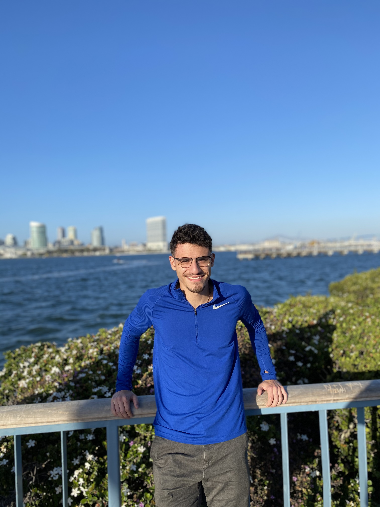
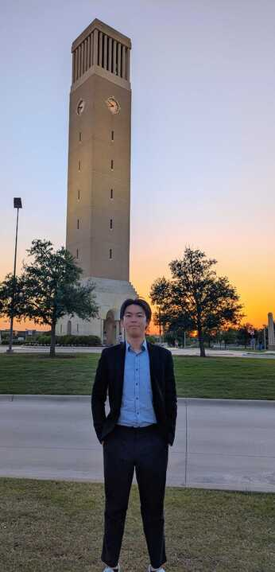

Meet the team behind the ASIC project.

PhD in Computer Engineering at Texas A&M University
Exchange student at Texas A&M in the spring of 2025 and Msc in Business Analytics at the Technical University of Denmark

Exchange student in engineering from Arts et Métiers in France at Texas A&M University